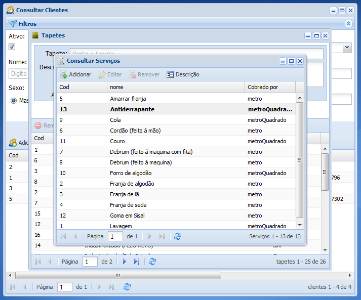
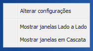

• Organizar janelas do sistema
Funcionalidade para organizar as janelas do sistema caso esteja trabalhando com muitas janelas abertas ao mesmo tempo e queira ter uma melhor visualização do sistema.

1. Clique com o botão direito do mouse em qualquer lugar da tela inicial do sistema, então abrirá um menu de contexto

Escolha uma das opções, Mostrar janelas Lado a Lado organiza as janelas do sistemas uma do lado da outra de forma que todas ficam visíveis, Mostrar janelas em Cascata organiza as janelas do sistema uma atrás da outra de forma que parte de cada janela fique visível.